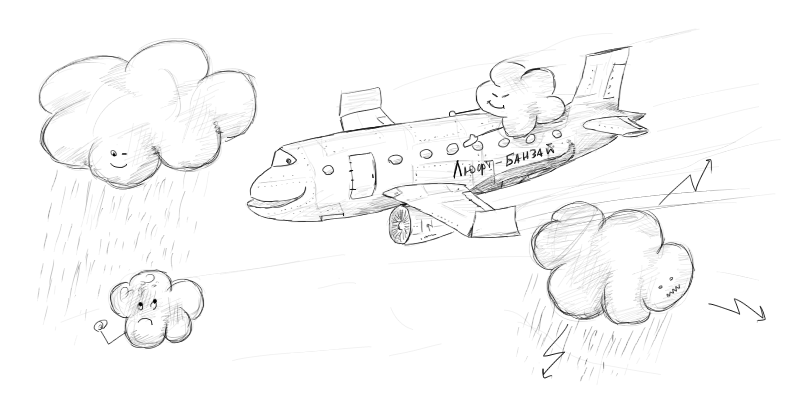

|
Анализ сайта |
|
1. Оставляйте место. Самое длинное название месяца — сентябрь. Самый длинное название дня недели (как собственно и сам день) — понедельник. То есть при развернутом формате даты, самая большая колбаса, которая может получиться: Оставляйте больше места под максимально возможную сумму или количество товаров в корзине. Требуйте самый длинный контент, который только может быть. Пусть в макете будет небольшое белое пятно, зато в хмурый сентябрьский понедельник ваша верстка никому не испортит настроение. Не забывайте и про длинные имена. Самое длинное реальное имя, которое мне встречалось: Пантелеймон Христарождественский. На две буквы длиннее чем Константин Константинопольский, который избит дизайнерами настолько, что на бедняге не осталось живого места. И читается полегче. 2.Составьте свой словарь
Старайтесь придерживаться одинаковых терминов и сокращений. Часто встречается, когда на разных страницах одного и того же сайта написано: Печально, что в большинстве случаев это сайты сотовых операторов и банков. Однако, веселит когда даже название собственной компании не подчиняется у копирайтеров никаким правилам. Его пишут латиницей, кириллицей или капсом. В кавычках или без. Склоняют или добавляют косноязычную приписку «в компании такой-то». 3. Закатайте все под одну гребенку. Не редкость, когда рядом стоят совершенно разные ссылки, не похожие друг на друга, как Де Вито и Шварценеггер. И ведут они на однотипные страницы: В обоих случаях при клике мы перейдем на однотипные страницы. Если похоже содержание, значит должна быть похожа и форма: Или так: Если вы приведете заголовки и ссылки на сайте к общему виду, пользователям станет легче проводить аналогии между действиями. И, следовательно, легче ориентироваться. 4. Следите за первыми буквами.
Когда пункты начинаются с одной буквы, это затрудняет чтение. Еще хуже, когда они начинаются с предлога. Встречали такое — для дома, для дачи, для офиса? Куда проще воспринимается (Sugrob, спасибо за правильный текст): Заглавная буква — как маяк, за нее цепляется глаз, чтобы начать чтение. Если все предложения в списке начинаются на одну букву, сложно даже понять на какой строчке вы остановились. Некоторые пункты можно поменять местами, когда их порядок не важен. Например, два первых начинаются на букву В, а третий на букву Д. Немного переставим и облегчим восприятие информации. 5. Почитайте форму регистрации. После того как вы нарисовали дизайн, попробуйте прочесть его как книжку. Слева направо, сверху вниз. Все, что в нем написано, начиная с заголовка. Обычно выходит что-то вроде этого: Такая же каша в головах у клиентов. Куда лучше:  Какими бы клевыми ни были тексты, в большинстве случаев их никто не будет читать. Пользователи работают быстро и невнимательно. Адаптируйте тексты для беглого чтения. Соль в том, чтобы самая важная информация в предложении стояла в начале. Например: Важная информация всегда должна быть впереди: 7. Кликайте наоборот Сейчас наступила пора ссылок и кнопок, показывающих дополнительную информацию. Часто забывают, что у этих элементов есть обратное действие. Получается, что после нажатия на такую раскрывашку вываливаются тридцать три пункта, которые сворачиваются на ту же самую ссылку «Показать больше», хотя теперь их показывается меньше. Свернуть — развернуть. Показать — скрыть. Не забывайте про антонимы. 8. Наведите и увидите Это отдельная тема для статьи и холивара. Однако, любой интерактивный элемент должен показывать, что с ним можно взаимодействовать. В условиях современного дриблодизайна, когда ссылки уже не обязательно должны быть синенькими и подчеркнутыми, а иконки порой похожи на чекбоксы — это очень полезная практика. 9. Крутите колесико.
Кто-то считает пользователей умными и полагается на скролл, кто-то делает свой дизайн с расчетом на бабушек и пытается втиснуть по максимуму информации на первый экран. В интернете слишком много очень авторитетных и противоречивых мнений на этот счет. Правило 700 px. Так мы его называем на нашей внутренней кухне. Смысл в том, чтобы на первом экране было понятно что делать дальше и было понятно, что ниже что-то есть. 10. Не жирните Возможно, в статике на макетах смотрится нормально, когда текст становится жирным при выборе одного таба или пункта в меню. На деле такие пункты прыгают влево и вправо как скоморохи, когда пользователи переходят от одного к другому. Очень старательные дизайнеры даже делают жирным шрифтом подсветку пункта при наведении курсора. 11. Не извиняйтесь, не оправдывайтесь и не поздравляйте Это самое больное место. Регулярно вижу на сайтах и в письмах такие сообщения: Или так: Я чувствую себя обманутым, когда читаю такие тексты. Это просто наглая ложь через ширму электронной почты или веб-интерфейса. Конечно, нужно писать для людей. Да, интерфейс должен быть с душой, тексты не должны быть скучными и сухими. Однако, если вы не будете тратить время пользователя, рассыпаясь в извинениях, и просто напишите ему самую важную информацию, он будет искренне и от всей души вам благодарен. Лучше так: 12. Спасите курсор от конвульсий
|